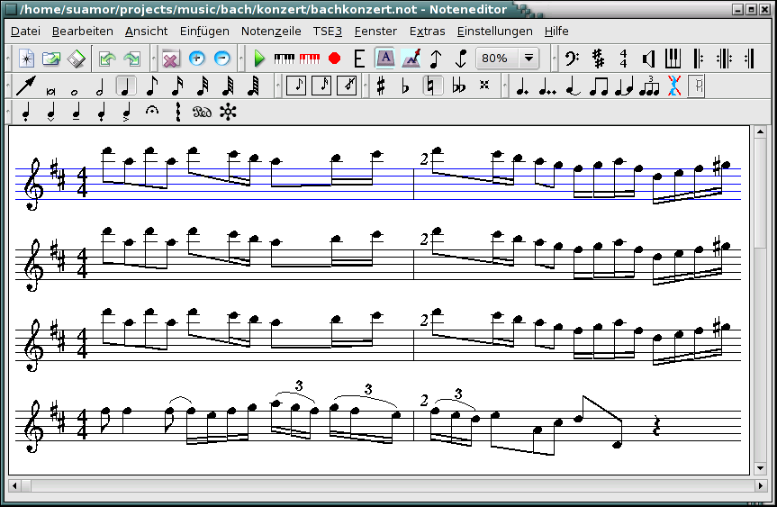

Noteedit - a score editor for Linux
Noteedit is an editor for music notation that supports an unlimited
number of staffs and up to 9 voices per staff. You can use it to
create sheets of notes. You can import and export into many formats
like midi, musicxml and lilypond.

We want to thank Berlios for hosting the noteedit project!
Download Noteedit...
Noteedit project page
Properties
* insertion/deletion/modification of notes, rests, dotted notes/rests,
tied notes, slured notes, clefs with/without shift, time signatures,
key signatures, volume signatures, tempo signatures, triplets, repeat
groups with/without special ending and instrument changes on different
staves;
* stem up/down
* building chords;
* building groups of beamed notes;
* zoom;
* fermata, trills, (de-)crescendo,
* sforzato, portato, strong pizzicato, sforzando
* multiple voices per staff
(see/hear: example10.not);
* drum notes
* Multi rests
* double whole notes
* konqueror (still experimental)
* playing on /dev/sequencer (if correctly configured) whereby:
o giving each staff a different voice;
o giving each staff a different channel;
o giving each staff a different reverbation and chorus;
o highlighting the played notes;
o muting staves;
* lyrics
* export MusiXTeX;
* export PMX;
* export MIDI;
* export LilyPond;
* import MIDI;
* read from MIDI keyboard;
* Application of MIDI event filters to eliminate
some dirty effects (especially on human played MIDI files);
* record from MIDI keyboard;
* saving an restoring the files. The fileformat is similarily to the
format of the music publication program (MUP). So you if you are a MUP
user you have the possibility to convert the files into MIDI and
Postscript. But this is no longer necessary because noteedit can export
MusiXTeX, PMX, MIDI and LilyPond.
* konqueror embedding (see below)
Mailing lists
noteedit-user@lists.berlios.de:
Note Edit User Mailing List
noteedit-devel@lists.berlios.de:
Note Edit Develop Mailing List
The TSE3 library
From version 1.5.0 on "noteedit" bases on a new library by Pete Goodliffe
called TSE3 (TSE3 Homepage). It is
a powerful open source sequencer engine written in C++. The libkmid version
is further supported but this version doesn't offer all features (MIDI
import).
TSE3 has its own file format and "noteedit" can produce it by means of TSE3
function calls. So the "noteedit" data are interchangable with sequencer
applications basing on TSE3.
The TSE3 library is not as much tested as the libkmid. So if you have
problems with MIDI playback, installation or other realated functions please
contact Pete Goodliffe. The TSE3 library comes with an application called
tse3play. So you can test whether it works on your system. If so "noteedit"
should work, too!
Konqueror embedding(experimental)
You can configure the Konqueror browser such a way that it starts noteedit
as embedded part. This requires to install "noteedit" in KDE system.
To configure embedding, first search for a file noteedit.desktop in
$HOME/.kde or $HOME/.kde2 and delete it!
Then start Konqueror and choose:
Settings --> Configure Konqueror ... --> File Associations -->
Add ... (Group) audio --> (Type name:) x-notes
In field Application Preference Order there should be already noteedit. In
File patterns: insert: *.not and *.not.sav
Press Apply and Ok! Now if you select a *.not and *.not.sav file the
Konqueror should show the noteedit program embedded in Konqueror surface.
And it should start playing.
The TiMidity server
(only with TSE3) Version 2.10.2 of the MIDI to WAVE converter and
player TiMidity++ ( http://www.goice.co.jp/member/mo/timidity) now has a
server mode. In this mode TiMidity++ behaves like a hardware MIDI
synthesizer. This approach is interesting for all those who can't bring the
MIDI device to work. A presupposition is that TiMidity++ is compiled with
(at least) the configure options:
--enable-audio=alsa --enable-server --enable-alsaseq
If so, you can start TiMidity++ with:
timidity -iA -B8,2 -Os (if this doesn't work try -Od)
Make sure that "noteedit" uses an TSE3 ALSA MIDI scheduler! Select Noteedit
sound configure dialog ( Configure Noteedit --> Sound). Make sure Noteedit
uses an ALSA MIDI scheduler! You should see 2 new MIDI devices:
* Timidity port 0 128:0
* Timidity port 1 128:0
Choose one of them and the replay should work!
You should also try to change "the orchestra" by installing a different GUS
patch. GUS patches can by found in the "Links" section at the TiMidity++
page.
Tip: If the replay interrupts during turn over then start TiMidity++ as
root. This increases the priority of the TiMidity++ process.
Documentation
The documentation is part of the noteedit archive. You find
it in the doc directory. The german translation can be found
under "de", the english original is in the noteedit directory
including all the pictures.
After having installed noteedit, you can read the documentation
by selecting the note edit handbook from the help menu.
In case there is an error when trying to open the documentation
file it might be that KDE can't find it if you compiled it from
the sources. Try to change the prefix so it points to the KDE
directory on your distribution (usually /usr) in that case.
LICENSE
This program is free software; you can redistribute it and/or modify it
under the terms of the GNU General Public License as published by the Free
Software Foundation; either version 2 of the License, or (at your option)
any later version. This program is distributed in the hope that it will be
useful, but WITHOUT ANY WARRANTY; without even the implied warranty of
MERCHANTABILITY or FITNESS FOR A PARTICULAR PURPOSE. See the GNU General
Public License (http://www.fsf.org/copyleft/gpl.html) for more details.
Last change: 03.02 2005